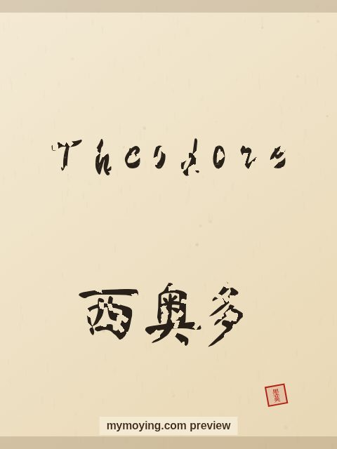

Theodore in Chinese Calligraphy
A brush-drawn preview of Theodore, with the Chinese characters 西奥多 (Xī ào duō) and a note on what the name means.

Sample. “Theodore” in the Regular (楷书) brush style with the Chinese name 西奥多 (Xī ào duō). The paid file removes the watermark.
The Chinese characters for Theodore
As a transliteration, Theodore is usually written 西奥多 (Xī ào duō). Each character is listed below with its own dictionary meaning — the name is chosen by sound, not by meaning, and Moying does not translate names. Please have a person review the characters before any permanent use such as a tattoo.
Origin and meaning
Theodore comes from Greek and means “gift of God”.
About the name Theodore
The name of the US president Theodore 'Teddy' Roosevelt.
As a gift or a tattoo
Because it means “gift of God”, a Theodore calligraphy print makes a thoughtful gift for someone who loves the name or its meaning.
Open Theodore in the generatorFree watermarked preview. $1.99 once for a clean high-resolution download of this name in every style and setting. No subscription. Digital product, delivered instantly; see Terms.